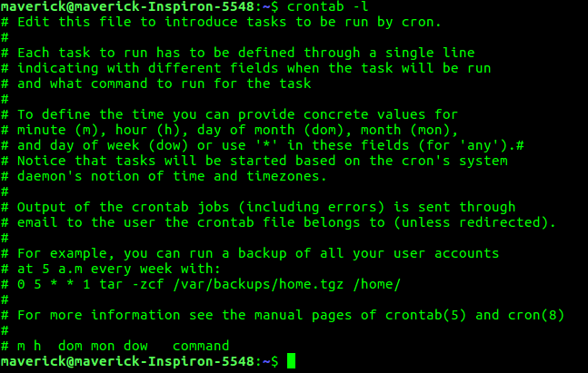
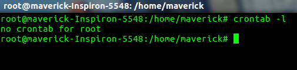
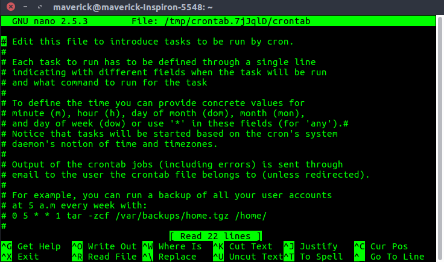

The crontab is a list of commands that you want to run on a regular schedule, and also the name of the command used to manage that list. Crontab stands for “cron table, ” because it uses the job scheduler cron to execute tasks; cron itself is named after “chronos, ” the Greek word for time.cron is the system process which will automatically perform tasks for you according to a set schedule. The schedule is called the crontab, which is also the name of the program used to edit that schedule.
Linux Crontab Format
MIN HOUR DOM MON DOW CMD
Crontab Fields and Allowed Ranges (Linux Crontab Syntax)
Field Description Allowed Value MIN Minute field 0 to 59 HOUR Hour field 0 to 23 DOM Day of Month 1-31 MON Month field 1-12 DOW Day Of Week 0-6 CMD Command Any command to be executed.
Examples of Cron jobs
1. Scheduling a Job For a Specific Time
The basic usage of cron is to execute a job in a specific time as shown below. This will execute the Full backup shell script (full-backup) on 10th June 08:30 AM.
The time field uses 24 hours format. So, for 8 AM use 8, and for 8 PM use 20.
30 08 10 06 * /home/maverick/full-backup
30 – 30th Minute
08 – 08 AM
10 – 10th Day
06 – 6th Month (June)
* – Every day of the week
2.To view the Crontab entries
- View Current Logged-In User’s Crontab entries : To view your crontab entries type crontab -l from your unix account.
 - View Root Crontab entries : Login as root user (su – root) and do crontab -l.

- To view crontab entries of other Linux users : Login to root and use -u {username} -l.

3.To edit Crontab Entries
Edit Current Logged-In User’s Crontab entries.To edit a crontab entries, use crontab -e. By default this will edit the current logged-in users crontab.

4.To schedule a job for every minute using Cron.
Ideally you may not have a requirement to schedule a job every minute. But understanding this example will will help you understand the other examples.
* * * * * CMD
The * means all the possible unit — i.e every minute of every hour through out the year. More than using this * directly, you will find it very useful in the following cases.
When you specify */5 in minute field means every 5 minutes.
When you specify 0-10/2 in minute field mean every 2 minutes in the first 10 minute.
Thus the above convention can be used for all the other 4 fields.
5.To schedule a job for more than one time (e.g. Twice a Day)
The following script take a incremental backup twice a day every day.
This example executes the specified incremental backup shell script (incremental-backup) at 11:00 and 16:00 on every day. The comma separated value in a field specifies that the command needs to be executed in all the mentioned time.
00 11, 16 * * * /home/maverick/bin/incremental-backup
00 – 0th Minute (Top of the hour)
11, 16 – 11 AM and 4 PM
* – Every day
* – Every month
* – Every day of the week
6.To schedule a job for certain range of time (e.g. Only on Weekdays)
If you wanted a job to be scheduled for every hour with in a specific range of time then use the following.
- Cron Job everyday during working hours :
This example checks the status of the database everyday (including weekends) during the working hours 9 a.m – 6 p.m00 09-18 * * * /home/maverick/bin/check-db-status
00 – 0th Minute (Top of the hour)
09-18 – 9 am, 10 am, 11 am, 12 am, 1 pm, 2 pm, 3 pm, 4 pm, 5 pm, 6 pm
* – Every day
* – Every month
* – Every day of the week - Cron Job every weekday during working hours :
This example checks the status of the database every weekday (i.e excluding Sat and Sun) during the working hours 9 a.m – 6 p.m.00 09-18 * * 1-5 /home/maverick/bin/check-db-status
00 – 0th Minute (Top of the hour)
09-18 – 9 am, 10 am, 11 am, 12 am, 1 pm, 2 pm, 3 pm, 4 pm, 5 pm, 6 pm
* – Every day
* – Every month
1-5 -Mon, Tue, Wed, Thu and Fri (Every Weekday)
7.To schedule a background Cron job for every 10 minutes.
Use the following, if you want to check the disk space every 10 minutes.
*/10 * * * * /home/maverick/check-disk-space
It executes the specified command check-disk-space every 10 minutes through out the year. But you may have a requirement of executing the command only during certain hours or vice versa. The above examples shows how to do those things.Instead of specifying values in the 5 fields, we can specify it using a single keyword as mentioned below.
There are special cases in which instead of the above 5 fields you can use @ followed by a keyword — such as reboot, midnight, yearly, hourly.
Cron special keywords and its meaning
Keyword Equivalent @yearly 0 0 1 1 * @daily 0 0 * * * @hourly 0 * * * * @reboot Run at startup.
8.To schedule a job for first minute of every year using @yearly
If you want a job to be executed on the first minute of every year, then you can use the @yearly cron keyword as shown below.This will execute the system annual maintenance using annual-maintenance shell script at 00:00 on Jan 1st for every year.
@yearly /home/maverick/bin/annual-maintenance
9.To schedule a Cron job beginning of every month using @monthly
It is as similar as the @yearly as above. But executes the command monthly once using @monthly cron keyword.This will execute the shell script tape-backup at 00:00 on 1st of every month.
@monthly /home/maverick/bin/tape-backup
10.To schedule a background job every day using @daily
Using the @daily cron keyword, this will do a daily log file cleanup using cleanup-logs shell script at 00:00 on every day.
@daily /home/maverick/bin/cleanup-logs "day started"
11.To execute a linux command after every reboot using @reboot
Using the @reboot cron keyword, this will execute the specified command once after the machine got booted every time.
@reboot CMD
Reference : Linux man page for cron